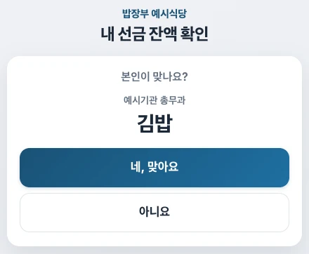

직원·손님 안내
식사 기록하기
내 폰에 앱을 설치하지 않아도 돼요.
식당에 놓인 태블릿에서 시작하세요.
이름 → 금액·서명 → 사장님 확인
내 이름을 찾아요
이름을 입력하고 이름·소속·부서가 맞는지 확인해요. 맞으면 [네, 맞아요]를 눌러요.
식사 금액을 넣고 서명해요
오늘 먹은 금액을 입력해요. 아래 빈칸에 손가락으로 서명하세요.
사장님께 확인받아요
[사장님 확인 받기]를 누르고 화면을 보여주세요. 사장님이 비밀번호를 넣고 확인·저장하면 끝이에요.
실제로 먹은 금액을 입력하세요.화면 크게 보기 ↗
헷갈릴 때는 이것만 보세요
내 이름이 없어요
이름을 앞글자부터 입력해 보세요. 그래도 없으면 사장님께 말씀해 주세요. 다른 사람 이름으로 적지 않아요.
금액을 모르거나 잔액이 부족해요
화면 아래 [금액을 모르겠어요 / 사장님 부르기]를 눌러 도움을 받으세요.
서명을 잘못했어요
[지우고 다시]를 눌러 다시 서명해요. 처음부터 다시 하려면 [처음으로]를 눌러요.

다른 사람이면 [아니요]를 눌러요.화면 크게 보기 ↗
잔액만 보고 싶어요
내 이름을 확인하면 금액 입력 화면 위에 잔액이 보여요. 내역은 [최근 사용 내역 보기]에서 보고, 끝나면 [처음으로]를 눌러요. 조회만 하면 돈이 차감되지 않아요.
[네, 맞아요]는 이름을 잘못 고르지 않도록 묻는 버튼이지 본인 인증이 아니에요. 다른 사람의 잔액·내역을 열어보지 마세요.